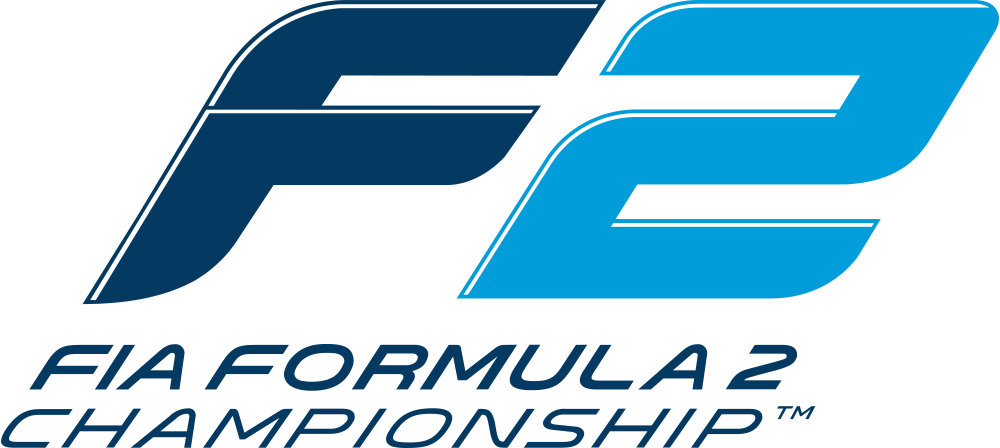
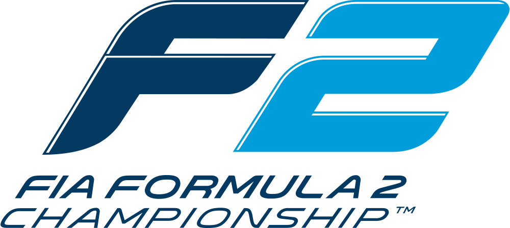

Les échelons de la monoplace avant d'arriver en F1

L'Antichambre de la F1 : La Formule 2
Formula 2 Home
La Formule 3 : Les débuts à l'international
Formula 3 Home
Mais la route pour la F1 ne commence pas par la F3...
Tous les pilotes débutent leurs carrières par le Karting où ils doivent à tout prix performer et montrer leur potentiel pour se faire repérer. En effet, se faire repérer est l'une des choses les plus importantes, car cela permet de trouver des sponsors ou même encore mieux d'être soutenu par l'Académie d'une écurie de F1.


L'Antichambre de la F1 : La Formule 2
Formula 2 HomeLa Formule 3 : Les débuts à l'international
Formula 3 HomeMais la route pour la F1 ne commence pas par la F3...
Tous les pilotes débutent leurs carrières par le Karting où ils doivent à tout prix performer et montrer leur potentiel pour se faire repérer. En effet, se faire repérer est l'une des choses les plus importantes, car cela permet de trouver des sponsors ou même encore mieux d'être soutenu par l'Académie d'une écurie de F1.